AI-generated interpretation, not a historical source. Mongol horse archers on the steppe at dawn.
The puzzle · 1206–1279
In Seventy Years, Mongol Armies Went from Raiding North China to Ruling All of It
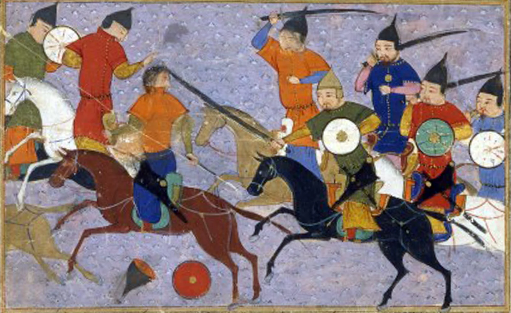
Mongols and Jin troops clash in 1211, as imagined by a Persian painter in Herat about 220 years later. Rashid al-Din, Jami al-Tawarikh, c. 1430. Bibliothèque nationale de France, Supplément persan 1113. Public domain, Wikimedia Commons.
1206Temüjin is proclaimed Chinggis Khan.
1211Mongol riders invade the Jin state in North China.
1234The Jin dynasty is destroyed.
1271Khubilai names his dynasty the Yuan.
1279The last Song emperor dies at sea.
The puzzle: how did a few hundred thousand riders come to govern tens of millions of farmers?
How to use this deck
A Mongol Travel Pass Opened Every Road, and These Five Tools Open Every Slide
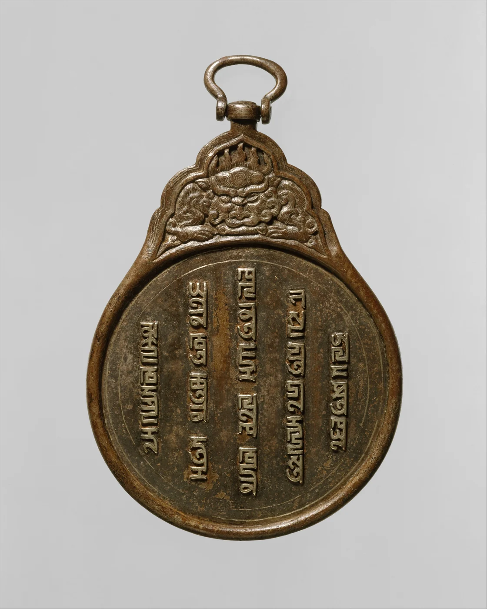
Safe-conduct pass (paiza), iron with silver inlay in Phags-pa script, late 13th century. The Metropolitan Museum of Art, 1993.256. Public domain, metmuseum.org.
Press S to open the Study Buddy notes for each slide.
Click any image, or press Enter on it, to see it full size.
Click a teal dotted word for a quick definition.
Answer each Your Turn question, then open the Reading Guide.
Use the arrow keys to move, and Esc for a slide map.
×
Paiza (travel pass)
A paiza was a metal tablet that Mongol rulers gave to officials and envoys. Showing it let the holder demand horses, food and lodging at relay stations along the road.
The Met translates this one as: "By the strength of Eternal Heaven, an edict of the Emperor [Khan]. He who has not respect shall be guilty."
Popups like this one close with Esc, the × mark, or a click outside the card.
Q1 story · The steppe · c. 1162–1206
Temüjin Survived a Brutal Steppe Youth and Was Proclaimed Chinggis Khan in 1206
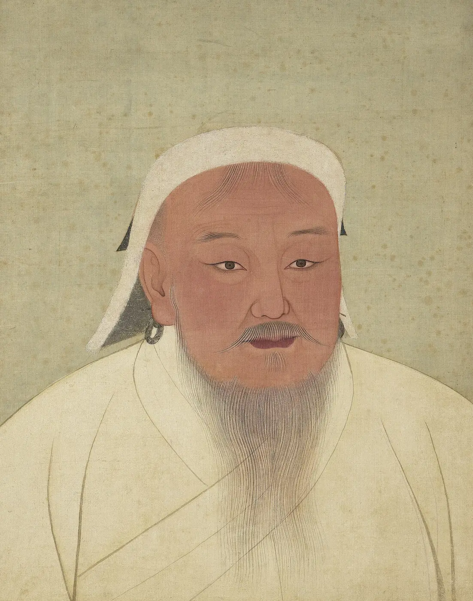
Chinggis Khan, album leaf, ink and color on silk, painted after his death for the Yuan court. National Palace Museum, Taipei. Public domain, Wikimedia Commons.
Abandoned. His father was poisoned, and the clan left the family to starve.
Captured. As a teenager he escaped rivals while locked in a wooden collar.
Rising. He rewarded loyalty and service, not noble birth.
Proclaimed. In 1206 an assembly named him Chinggis Khan, ruler of the steppe.
Guarded. His personal guard, the keshig, became his government's core.
×
Khan and Great Khan
A khan is a ruler of steppe peoples. A Great Khan (qaghan) is the supreme ruler over many khans and tribes.
"Chinggis" probably means something like "fierce" or "oceanic, universal." Scholars still debate the exact sense.
×
Keshig (the khan's guard)
The keshig was the khan's personal bodyguard, which grew to about 10,000 men. Guardsmen protected the khan's tents, but they also served as cooks, scribes, quiver-bearers and stewards.
Sons of leading families served in it, so it doubled as a training school for future generals and governors, and as a way to hold those families' loyalty.
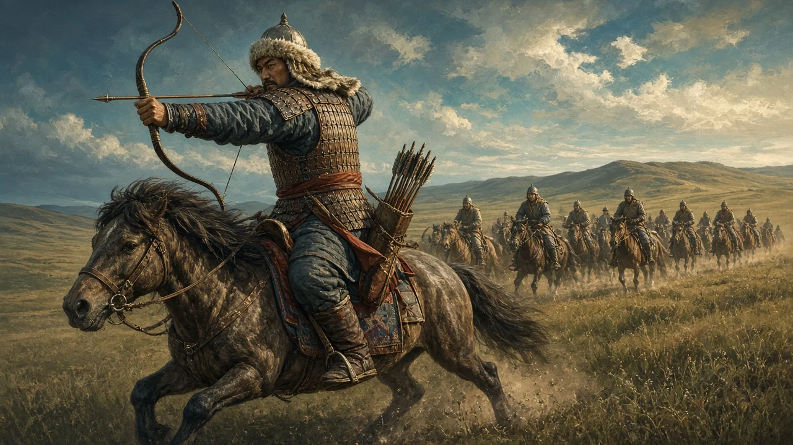
Q1 story · The army
Speed, Discipline and Spare Horses Made the Mongol Army the Most Feared of Its Age
Spare horses. Each rider brought several remounts, so columns kept moving for days.
Units of ten. Men served in units of 10, 100, 1,000 and 10,000.
Fake retreats. Riders pretended to flee, then turned and shot their pursuers.
AI-generated interpretation, not a historical source. A Mongol horse archer at the gallop.
×
Decimal units
Mongol soldiers were grouped by tens: an arban (10), a jaghun (100), a mingghan (1,000) and a tümen (10,000).
Because Chinggis often put men from different tribes in the same unit, a soldier's loyalty ran up the chain of command to the khan, not back to his old chief.
Q1 story · North China · 1211–1219
Mongol Armies Crushed the Jin in the Field in 1211 and Took Their Capital, Zhongdu, in 1215
1211. At Yehuling pass, Mongol cavalry shattered a large Jin frontier army.
1213–1214. Riders looted the North China Plain; the Jin bought a truce.
1214–1215. The Jin court fled south to Kaifeng, and Zhongdu was burned.
1217–1219. General Muqali took over in China; Chinggis turned west.
Not just plunder. Chinggis already placed darughachi overseers over some conquered towns.
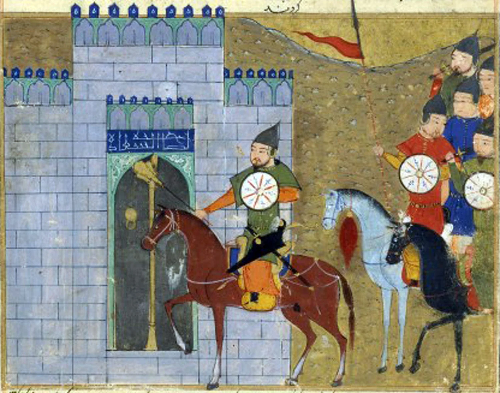
The siege of Zhongdu (Beijing), 1213–1214, as painted in Herat about 1430. Rashid al-Din, Jami al-Tawarikh. BnF, Supplément persan 1113. Public domain, Wikimedia Commons.
Q1 story · The Tangut Xia · 1209–1227
The Tangut Xia Kingdom Submitted in 1209, Defied Chinggis, and Was Wiped Out in 1227
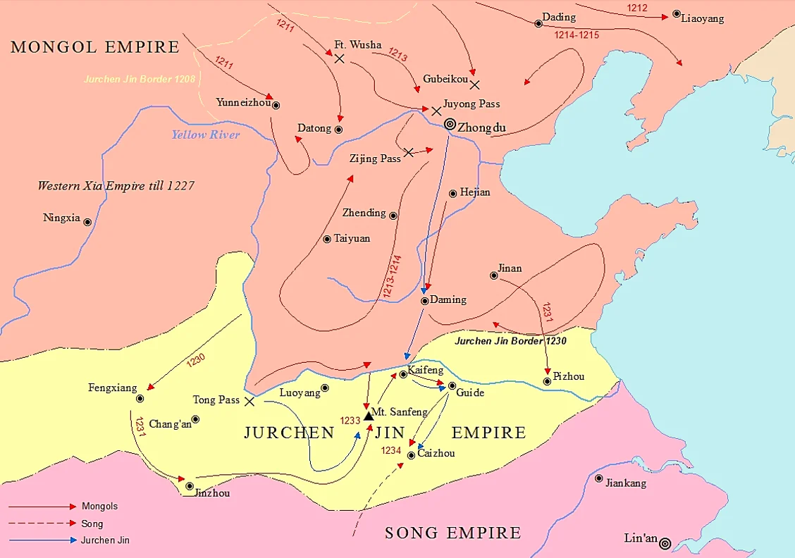
Mongol campaigns against the Jin, 1211–1234, with Western Xia (destroyed 1227) on the left and the Song empire to the south. Map by SY, CC BY-SA 4.0, Wikimedia Commons.
1209. After a botched Mongol flood attack, Xia submitted and sent a princess.
1219. Asked for troops, a Xia minister mocked the khan's strength.
1226–1227. Chinggis destroyed Xia city by city and died during the siege.
Q1 story · The human cost · 1211–1234
Two Decades of War Emptied North China, Though No One Knows the True Death Toll
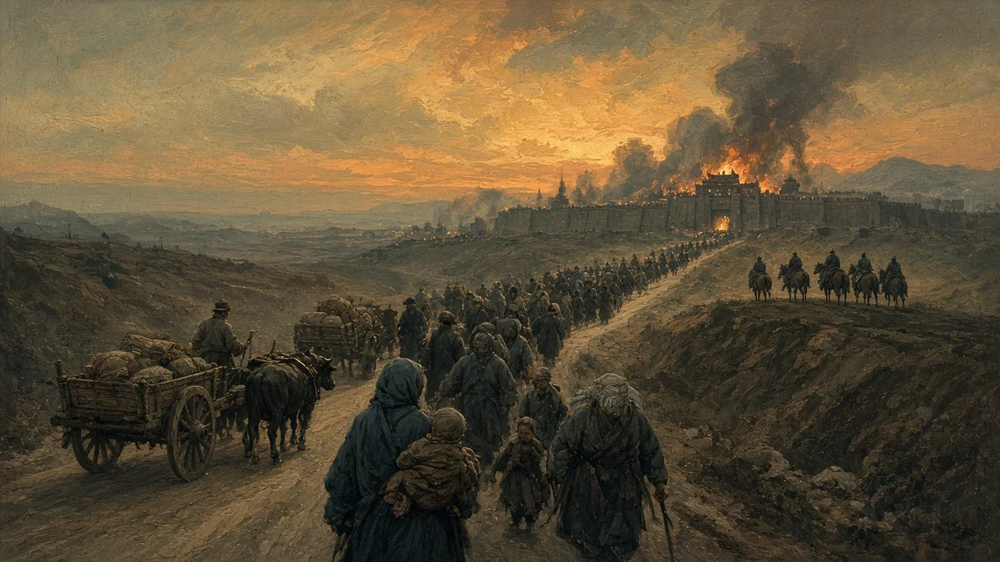
AI-generated interpretation, not a historical source. Refugees flee a burning town in North China.
White bones lie everywhere like tangled hemp; in a few years our home villages turned to desert. I thought every soul north of the Yellow River was gone, yet thin smoke still rises from a few broken houses.
Yuan Haowen, a Jin poet and official, written in 1233 as Mongol soldiers marched him north as a captive after Kaifeng fell. Translated for this deck.
8.4 million
households were counted in Jin North China in 1207.
↓
under 2 million
households were registered by Mongol census takers in the mid-1230s.
Be skeptical. Many fled, hid from census takers, or were never counted.
×
Why the census gap misleads
A census counts only the households a government can find and tax. After 1211, millions of people in North China fled to the Song south, hid in the hills, or became captives and private servants of Mongol nobles, who did not report them.
So the gap between the two counts mixes deaths with people who simply disappeared from the records. Historians agree the losses were enormous, from killing, famine, disease and flight, but they do not agree on how many died.
Q1 story · The heir · 1229–1241
Chinggis's Son Ögödei Finished Off the Jin and Began Counting and Taxing North China
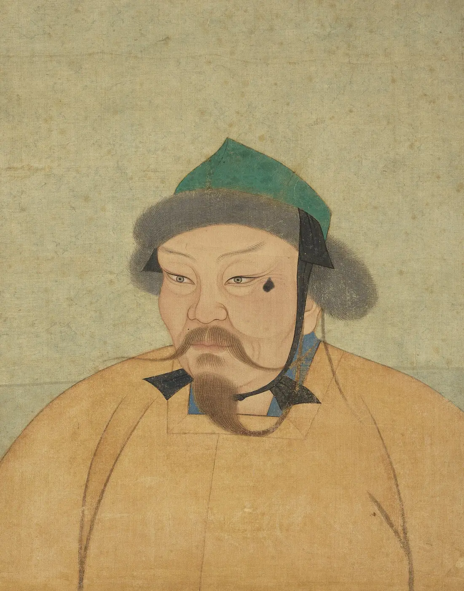
Ögödei Khan (ruled 1229–1241), album leaf, ink and color on silk, Yuan court. National Palace Museum, Taipei. Public domain, Wikimedia Commons.
1234. Ögödei destroyed the last Jin stronghold, and the Jin emperor killed himself.
A census. He ordered a count of North China's households for taxes and soldiers.
A capital. In 1235 he walled a permanent capital at Karakorum in Mongolia.
Roads. He expanded the yam, a chain of relay stations across the empire.
×
Yam (relay stations)
The yam was a chain of relay stations with fresh horses, food and shelter. Envoys and messengers carrying a paiza could ride from station to station across the empire.
Nearby households had to supply the horses and food, which made the yam a heavy burden on local people.
Q1 story · Holding the land · 1251–1259
Möngke Tightened Control with a New Census, Overseers and Garrison Armies That Stayed
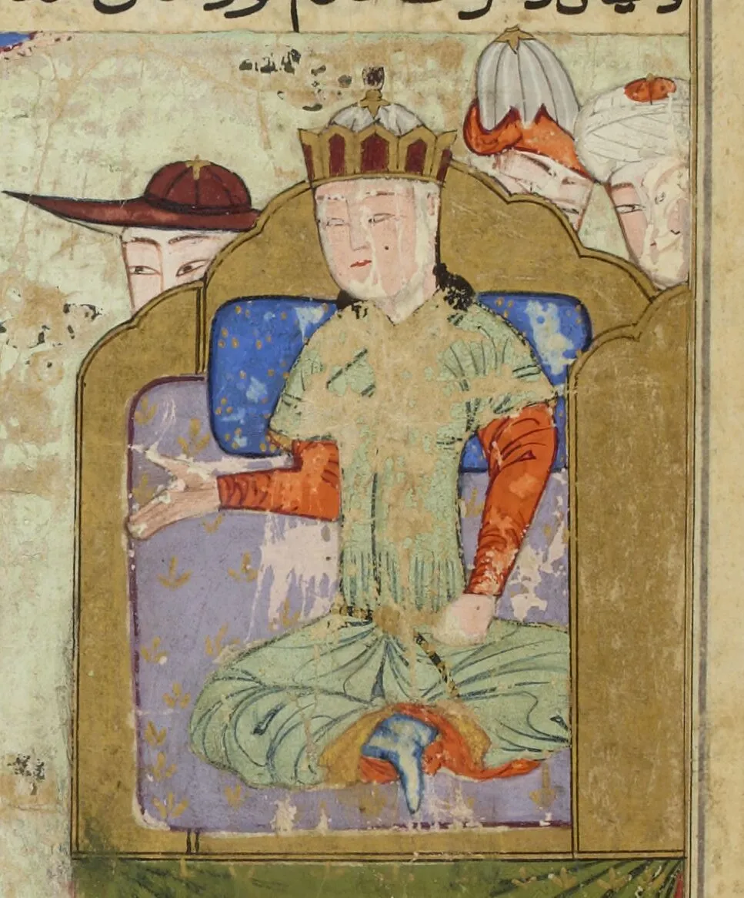
Möngke enthroned, from Juvaini's History of the World Conqueror, copied and painted in Shiraz in 1438. Public domain, Wikimedia Commons.
1252. Möngke ordered a stricter census and took tax collection under his own officials.
Darughachi. Resident overseers watched local leaders and the khan's share of taxes.
Tamma armies. Garrison troops were posted to stay, not to raid and leave.
Khubilai. Möngke put his brother Khubilai in charge of North China in 1251.
Still Mongol. The khans kept mobile courts, herds and steppe traditions.
×
Darughachi (overseer)
A darughachi (the word comes from "to press a seal") was an official the khan placed over a conquered town or region. Chinggis already used them; his heirs used them more widely and more routinely.
He watched local leaders, oversaw the census and taxes, and reported back. Local people did the daily work of government, but the darughachi made sure the khan got his share.
×
Tamma (garrison armies)
A tamma army was a permanent garrison force made of soldiers drawn from many units and peoples. It was posted on the edge of newly conquered land to keep it under control.
A raiding army leaves after the loot is taken. A tamma army stays, which shows the Mongols now meant to hold the land.
Your Turn · Review Question 1
Review Question 1
The Evolution of Mongol Conquest Strategies
Contrast the early Mongol military tactics in North China under Chinggis Khan with the evolving administrative approach of his successors. How did the Mongols transition from nomadic conquerors to sedentary rulers?
Yelü Chucai, a Khitan Scholar Who Had Served the Jin, Became the Khans' Chief Adviser on North China
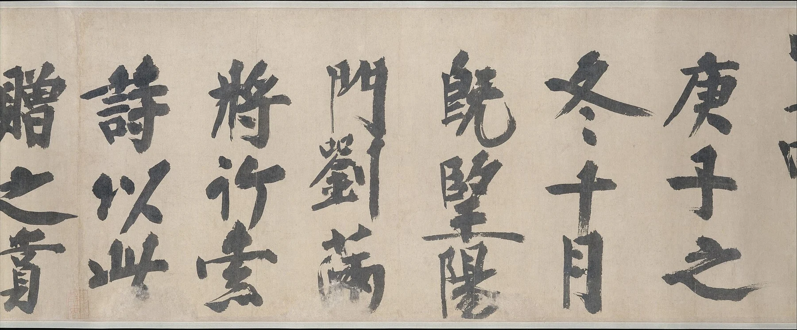
Yelü Chucai's own handwriting: Poem of Farewell to Liu Man, handscroll, ink on paper, dated winter 1240 (the date is on the right). The Metropolitan Museum of Art, 1989.363.17, Bequest of John M. Crawford Jr. Public domain, metmuseum.org.
Who he was.Yelü Chucai was a Khitan noble trained in Chinese classics and Buddhism.
Summoned in 1218. Chinggis nicknamed him "Longbeard" and kept him close.
Liao and Jin are enemies from generation to generation. I have taken revenge for you.My father and grandfather both served the Jin. As their subject, how could I dare to treat my ruler as an enemy?
Chinggis Khan and Yelü Chucai at their first meeting in 1218, as told in Yelü's biography in the Yuan shi, the official history of the Yuan compiled in 1369–1370. Translated for this deck.
×
Yelü Chucai (耶律楚材)
Yelü is the family name of the Khitan royal clan that ruled the Liao dynasty (907–1125) before the Jin conquered it. Your textbook spells his name Yelü Qucai; it is the same person.
The Khitans were a people from the Mongolian and Manchurian borderlands. By Yelü's time many Khitan families had lived among Chinese for generations and served the Jin as officials.
Q2 story · The great debate · about 1230
Ögödei's Mongol Advisers Wanted to Turn North China into Pasture, and Yelü Chucai Argued for Taxing Its Farmers
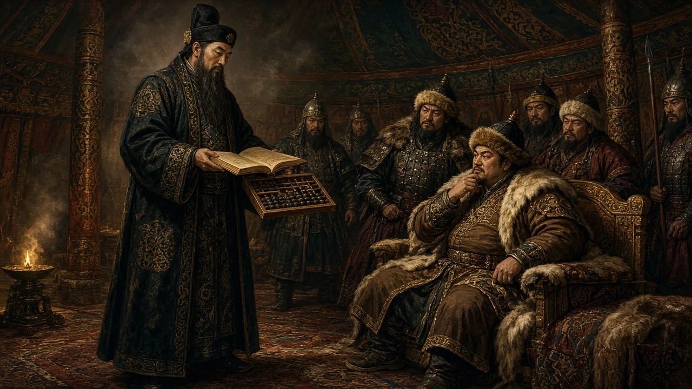
AI-generated interpretation, not a historical source. Yelü Chucai makes his case to Ögödei.
As told in Yelü's later official biography:
The Han people are of no use to the state. We could clear them all out and turn the land into pasture.
Bie-die, a Mongol official at Ögödei's court, as quoted in Yelü's Yuan shi biography.
Fix fair taxes on land, trade, salt, wine, iron and the goods of hills and marshes, and each year you will get 500,000 taels of silver, 80,000 bolts of silk and over 400,000 shi of grain. How can you call them useless?
Yelü Chucai's reply, from the same biography. Translated for this deck.
Try it for me.
Ögödei Khan's answer.
×
Taels, bolts and shi
A tael (liang) was a weight of silver, a little over an ounce. A bolt was a standard length of silk cloth, which worked almost like money. A shi was a large measure of grain, roughly a big sack's worth.
You do not need exact conversions. The point is that a taxed farming population could produce a steady, enormous income every single year.
Q2 story · The test · 1230–1231
Yelü's Tax Offices Delivered the Promised Silver in 1231, and Ögödei Put Him in Charge of the Secretariat
1230. Yelü set up ten tax bureaus across North China.
Scholars, not soldiers. He staffed them with Confucian-educated former Jin officials.
1231. The registers, silver and silk were laid out before a delighted khan.
You never left my side, yet you have made the state's revenues sufficient.Ögödei to Yelü in 1231, from the Yuan shi. He then named Yelü head of the Secretariat.
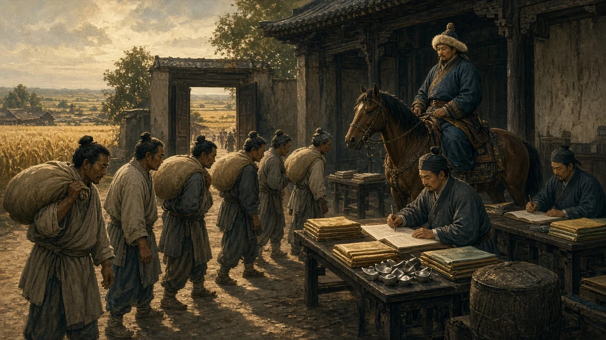
AI-generated interpretation, not a historical source. Clerks record silver and grain in a tax bureau.
Q2 story · Land and people · 1233
When Kaifeng Surrendered in 1233, Yelü Argued That Land Without People Was Worthless
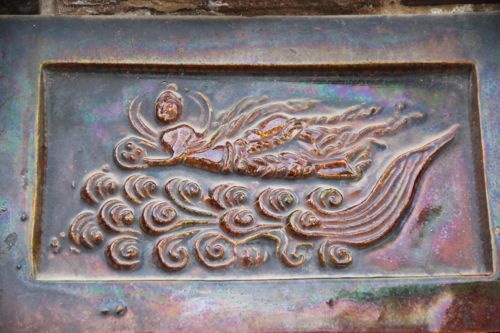
The "Iron Pagoda" of Kaifeng, built in 1049 and still standing. It was already old when the Mongols took the city. Photo: Gary Lee Todd, CC0, Wikimedia Commons.
The custom. Cities that resisted the Mongols were usually massacred.
The demand. General Subutai wanted Kaifeng's people killed after its long resistance.
Our soldiers have been in the field for decades. What they want is land and people. Land without people, what use is it?Yelü to Ögödei in 1233, from the Yuan shi. Translated for this deck.
The result. Ögödei spared the city and punished only the Jin royal clan.
Be skeptical. His biography claims 1,470,000 lives saved, probably an inflated number.
Q2 story · The rival bid · 1238–1241
Merchant Tax Farmers Offered to Double the Take, and Ögödei Chose Their Silver over Yelü's Restraint
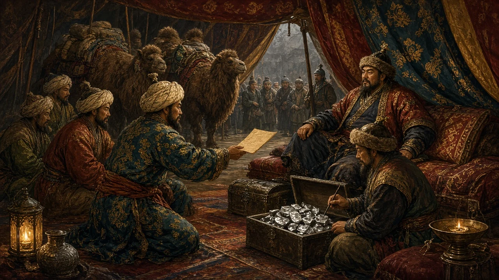
AI-generated interpretation, not a historical source. Merchants bid for the right to collect taxes.
1.1 million
taels came in from Yelü's regular taxes by 1238.
2.2 million
taels were offered by the merchant Abd al-Rahman.
His bid bought the right to collect taxes and keep the profit.
The poverty and suffering of the people will begin from this!Yelü Chucai, after he protested in tears and Ögödei approved the bid anyway, from the Yuan shi.
Q2 story · The competition · 1236–1244
Three Other Ways of Making Money from China Competed with Yelü's Regular Taxes
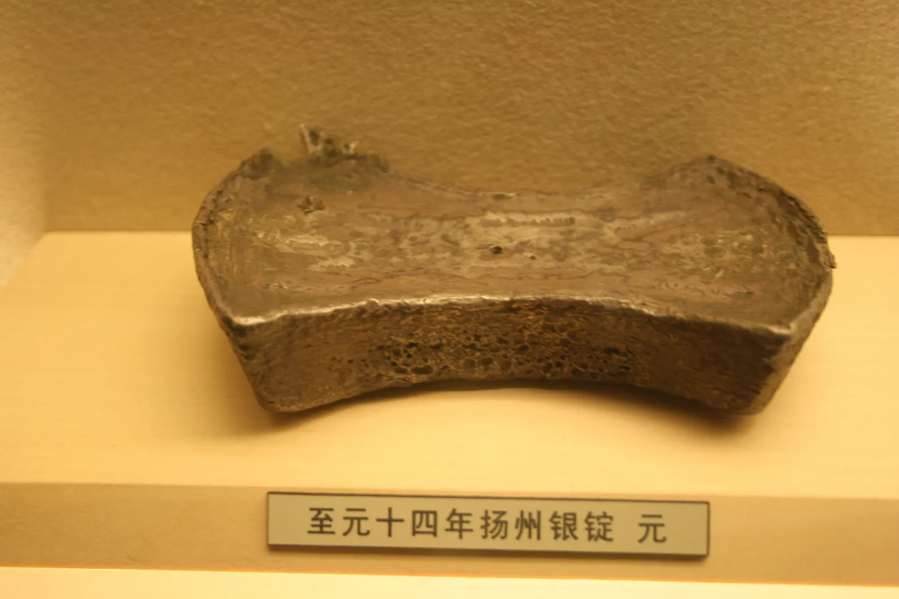
A Yuan-dynasty silver ingot. Silver like this was what tax farmers and merchant partners promised the court. Shanghai Museum. Photo: Gary Lee Todd, CC0, Wikimedia Commons.
Tax farming
A bidder paid the court up front, then collected from the people.
Ortogh partnerships
Merchant groups used court money for trade, loans and tax collection.
Appanages
In 1236 Ögödei granted North Chinese households to princes and generals.
The end. Yelü was sidelined after 1241 and died in 1244.
×
Tax farming
Tax farming means contracting for the right to collect specified revenues. The bidder pays the ruler a fixed sum up front, then collects from the people and keeps whatever is left after covering that payment.
The ruler gets money fast with little effort. Collectors often squeeze the people harder, because their profit depends on taking more than they paid.
×
Ortogh (merchant partnerships)
An ortogh (from a Turkic word for "partner") was a merchant association, often of Central Asian Muslims or Uighurs, that pooled capital from the court, princes or other investors.
Ortogh partners shared commercial risk on long-distance trade and finance across Eurasia. They also sometimes collected revenues for their patrons. High-interest lending, including the crushing "lamb's interest" named in Chinese sources, was one part of that wider business, not the whole of it.
×
Appanage (princely grant)
An appanage was an allocation of households or revenues to a member of the ruling elite, such as a prince or general. The 1236 grants in North China are a famous example.
Appanages are not the same thing as tax farming or as ortogh partnerships. They gave elite holders a claim on local people and income, which complicated any plan for a single state tax system.
Your Turn · Review Question 2
Review Question 2
Economic Administration and Yelü Qucai
How did the Khitan advisor Yelü Qucai influence Mongol economic policies in North China, and what alternative revenue-generating methods ultimately competed with his vision?
Answer from memory first, then check your reading for the passage that answers this question.
The debate (AI image)The tax bureaus (AI image)The rival systems
Q3 story · The prince · 1242–1256
Prince Khubilai Gathered Chinese Advisers and Learned That Sparing Cities Won More Than Burning Them
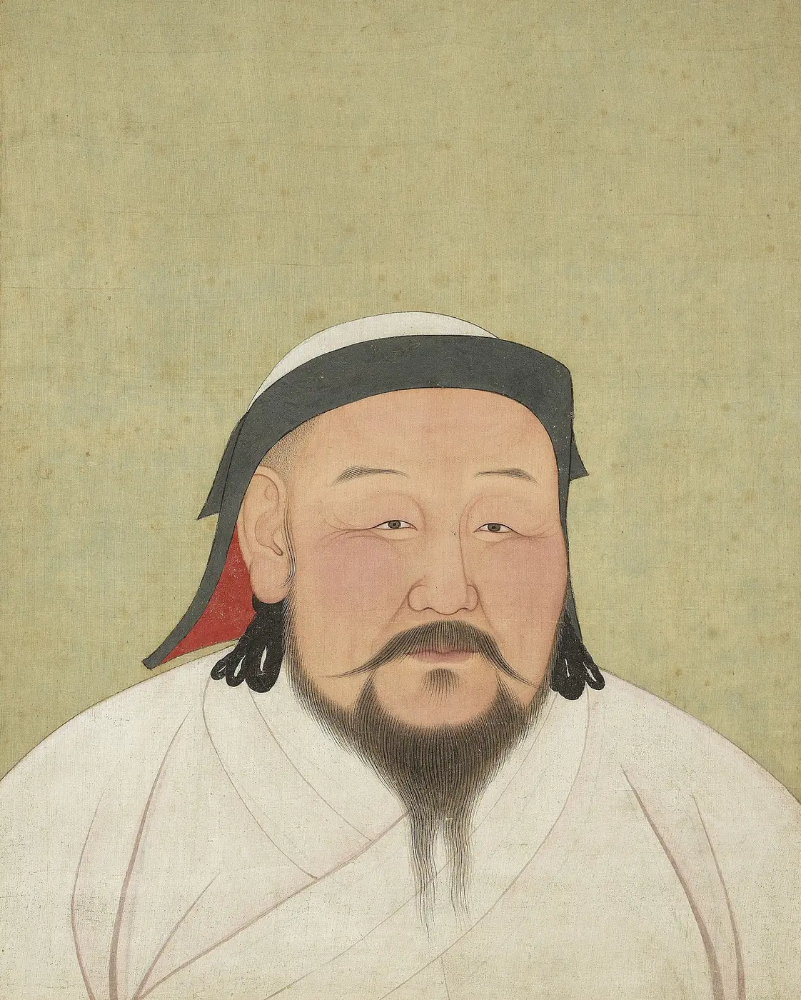
Khubilai Khan, Yuan court album, National Palace Museum, Taipei. Public domain, Commons.
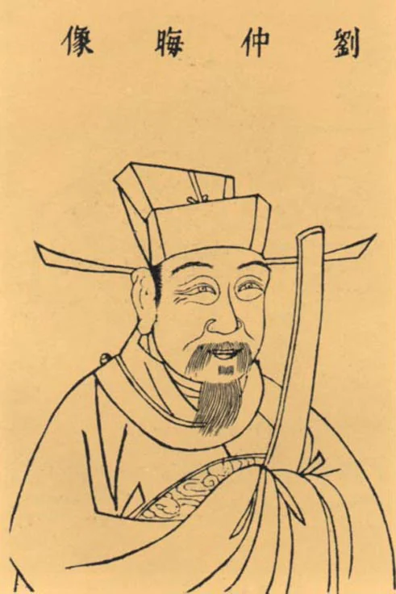
Liu Bingzhong, imagined in a Ming print, Sancai tuhui, 1609. Public domain.
1242. The monk-scholar Liu Bingzhong joined Khubilai and advised him for thirty years.
His mother's lesson. Sorghaghtani Beki protected her farmers instead of squeezing them.
1251. His brother Möngke put Khubilai in charge of North China.
Last night you told the story of Cao Bin, who conquered without killing. I can do that.Khubilai to his adviser Yao Shu in 1253, marching on the Dali kingdom in Yunnan, from Yao Shu's Yuan shi biography. Khubilai spared Dali's people. Translated for this deck.
Q3 story · The throne · 1259–1264
Khubilai Seized the Throne in 1260 and Won a Four-Year Civil War with the Wealth of North China
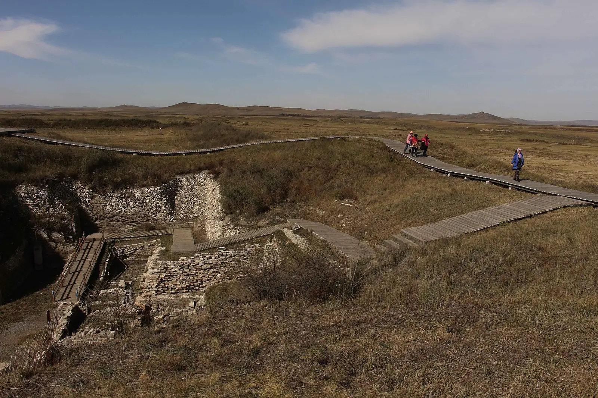
The grassy ruins of Shangdu ("Upper Capital," the Xanadu of legend), first built as Kaiping by Liu Bingzhong in 1256. Inner Mongolia. Photo: Flaumfeder, CC BY-SA 4.0, Wikimedia Commons.
1259Möngke dies at war with the Song; Khubilai hurries north.
1260Khubilai is proclaimed Great Khan and takes a Chinese reign title.
1260His brother Ariq Böke is also proclaimed Great Khan in Mongolia.
1262A Chinese warlord, Li Tan, rebels and is crushed.
1264Ariq Böke, cut off from Chinese grain, surrenders.
Q3 story · The dynasty · 1264–1272
In 1271 Khubilai Named His Dynasty Yuan, an Idea from the Book of Changes, and Ruled from a New Capital, Dadu
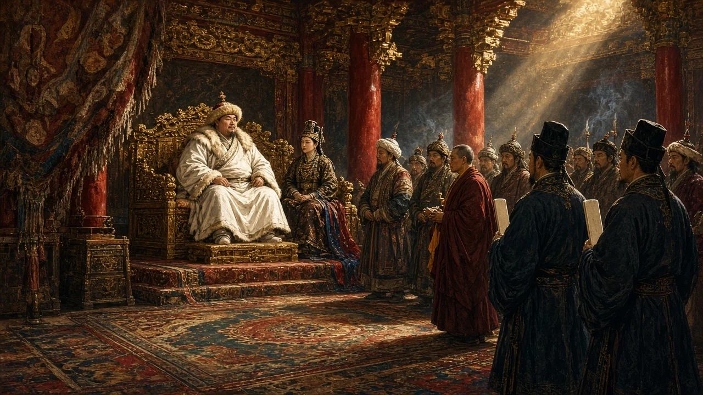
AI-generated interpretation, not a historical source. Khubilai and his empress Chabi receive Mongol, Tibetan and Chinese officials in the palace at Dadu.
We may establish the dynastic name Great Yuan, taking its meaning from "qianyuan" in the Book of Changes.Khubilai's edict of December 1271, preserved in the Yuan shi. Liu Bingzhong is credited with suggesting the name. Translated for this deck.
A new kind of name.Yuan means "primal origin," an idea, not a place.
A new capital.Dadu, "Great Capital," rose where Beijing stands today.
×
Yuan (元), "origin"
The name comes from the Book of Changes (Yijing), a classic of Chinese thought. Its first line praises qianyuan (乾元), the creative power of Heaven: "Great is qianyuan! All things owe their beginning to it."
So "Great Yuan" claimed that Khubilai's rule was as universal as Heaven itself. It also avoided naming the dynasty after the Mongols' homeland, which made it easier for Chinese subjects to accept.
×
Dadu (大都), the Great Capital
Dadu was the Yuan winter capital, on the site of modern Beijing. Liu Bingzhong planned it on a grid following an ancient Chinese ideal of a royal city, with the palace in the center, the ancestral temple to the east, and markets to the north.
In summer the court moved north to Shangdu on the steppe, so the emperor lived part of each year in each world.
Q3 story · Two roles · 1260–1294
Khubilai Ruled as a Chinese Emperor and a Mongol Great Khan at the Same Time
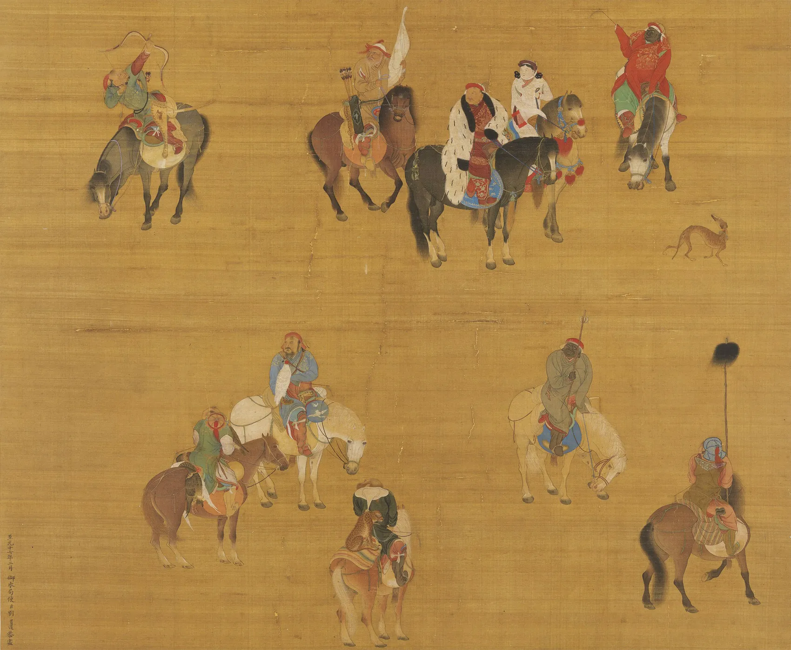
Liu Guandao, Khubilai Khan Hunting, 1280, hanging scroll, ink and color on silk, by a Chinese court painter. National Palace Museum, Taipei. Public domain, Wikimedia Commons.
Chinese emperor
He set up Chinese-style offices for government, army and inspection.
He honored his ancestors with Chinese temple rites.
Mongol khan
He hunted and held court on the steppe every summer.
He ordered a new Phags-pa script for official documents across his empire.
He is of a good stature, neither tall nor short, but of a middle height. His complexion is white and red, the eyes black and fine.Marco Polo, a Venetian who said he served Khubilai from about 1275 to 1292, in his Travels (Yule translation). Can we trust him?
×
Phags-pa script
In 1269 Khubilai ordered a new alphabet, designed by the Tibetan Buddhist lama Phags-pa, his imperial preceptor. It was based on Tibetan letters and was meant to write Mongolian, Chinese and other languages of the empire.
It appears on seals, coins, paper money and passes like the paiza at the start of this deck. Most people kept using Chinese characters, and the script faded after the Yuan fell.
×
Can we trust Marco Polo?
Partly. Polo's book was written in prison in Genoa with a writer of romances, Rustichello of Pisa, and it mixes accurate details about Yuan China with boasting and borrowed stories.
No Chinese record mentions him, and he leaves out things like tea drinking and foot binding. Most scholars think he did reach China, but they read his claims, especially about his own importance, with care. The Pierian Spring section has a whole slide on him.
Q3 story · The plan for the south · 1260–1274
Khubilai Aimed His Song War at One River Fortress and Promised Mercy to Cities That Surrendered
A hard target. The rich Song south was full of rivers where cavalry struggled.
A grievance. Song locked up Khubilai's envoy, Hao Jing, for sixteen years.
A defector's plan. Song general Liu Zheng urged a navy and an attack on Xiangyang.
Long ago Cao Bin pacified the south without a love of killing. Understand my heart, and be my Cao Bin.Khubilai to his commander Bayan in 1274, from Bayan's Yuan shi biography. Translated for this deck.
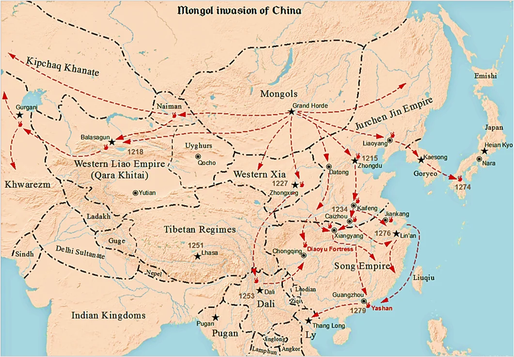
Mongol invasion routes into China. Find Xiangyang on the Han River, the Song capital Lin'an (Hangzhou), and Yashan on the far south coast. Map by SY, CC BY-SA 4.0, Wikimedia Commons.
×
Xiangyang (襄陽)
Xiangyang and its twin city Fancheng faced each other across the Han River in modern Hubei. Thick walls, a wide moat and the river itself made them the strongest fortress on the Song frontier.
The Han River flows south into the Yangzi. Whoever held Xiangyang held the gate to the Yangzi valley, the heartland of Song China.
Your Turn · Review Question 3
Review Question 3
Khubilai Khan's Sinicization and State-Building
Analyze Khubilai Khan's strategic adaptations to Chinese political traditions. How did he utilize Chinese advisors and cultural concepts to legitimize his rule and conquer the Southern Song?
Answer from memory first, then check your reading for the passage that answers this question.
Khubilai KhanThe court at Dadu (AI image)Khubilai hunting, 1280
Q4 story · The siege · 1268–1273
For Five Years a Mongol-Built Navy and a Ring of Forts Strangled Xiangyang by Land and River
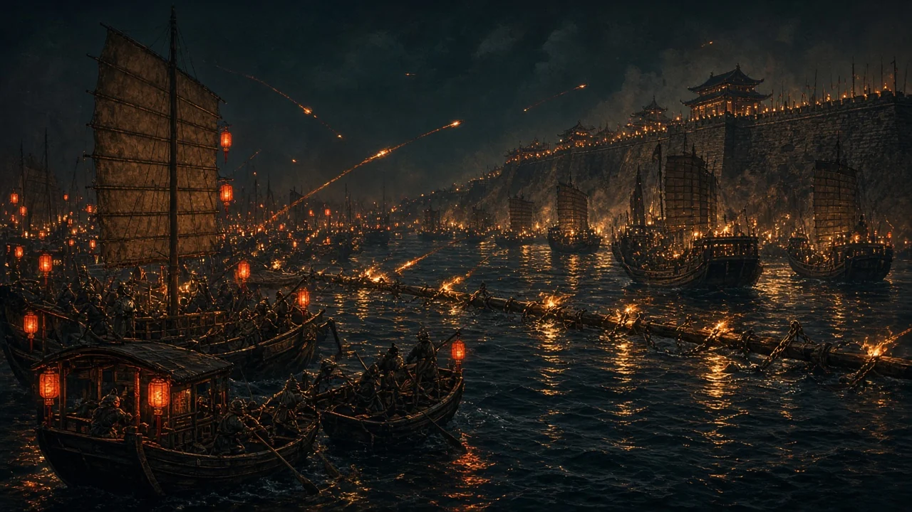
AI-generated interpretation, not a historical source. Song relief boats try to break the river blockade at night, 1272.
1268. Mongol forces ringed Xiangyang and Fancheng with forts and walls.
A navy from nothing. Thousands of boats were built, crewed mostly by Chinese sailors.
1272. Song paddle boats broke through the blockade at night, but the city stayed trapped.
Fire and noise. Both sides hurled gunpowder "thunder-crash" bombs.
×
Thunder-crash bombs
Gunpowder was a Chinese invention. By the 1200s, Jin and Song armies had bombs with iron or ceramic casings that burst with a deafening bang and threw out fragments and fire.
They were thrown by hand or launched by catapult. The Mongols learned to use them from Chinese experts and carried them as far as Japan.
Q4 story · The machines · 1271–1273
Muslim Engineers' Counterweight Trebuchets Broke Xiangyang's Nerve, and It Surrendered in March 1273
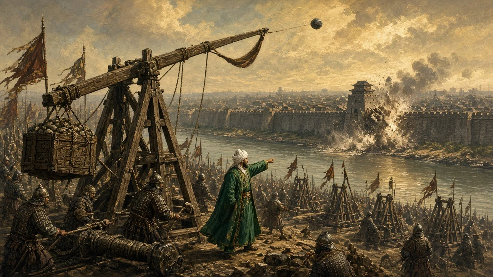
AI-generated interpretation, not a historical source. A counterweight trebuchet before Xiangyang.
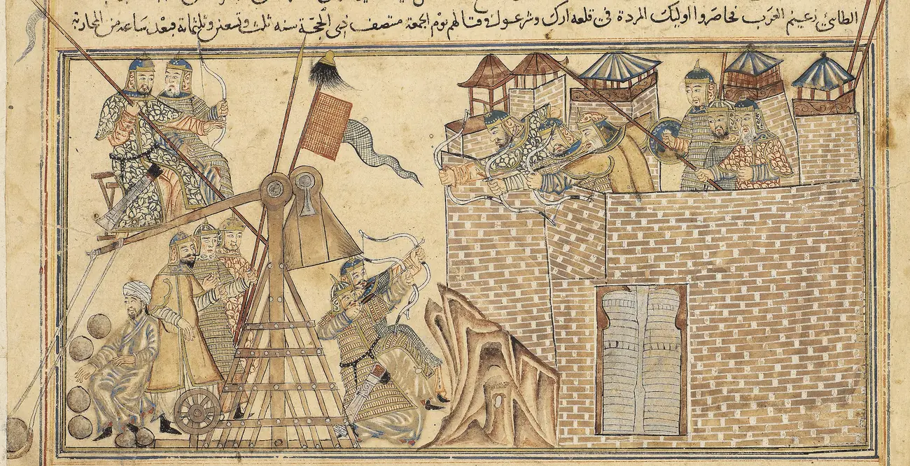
A trebuchet in Rashid al-Din's Jami al-Tawarikh, Tabriz, about 1306–1314. Edinburgh University Library, MS Arab 20. Public domain, Commons.
1271. Khubilai asked the Mongol ruler of Iran for siege experts.
A new machine. Their counterweight trebuchets hurled stones of a hundred pounds or more.
When the machine was released, its sound shook heaven and earth. Whatever it struck was smashed, and the stone sank seven feet into the ground. The Song commander Lü Wenhuan was afraid and surrendered the city.The official Yuan shi (ch. 203), biography of the engineer Ismail. A dramatic court report, not a technical measurement. Translated for this deck.
Tall tale. Marco Polo later claimed his family built these machines. They arrived too late.
×
Counterweight trebuchet
A trebuchet is a giant throwing arm on a pivot. Chinese armies had long used traction trebuchets, pulled down by teams of people hauling on ropes.
A counterweight trebuchet uses a huge box of earth or stones instead. When the box drops, the arm whips up and throws a heavier stone farther and more accurately than human muscle could. It was well known in the Middle East but new to China.
Q4 story · Down the Yangzi · 1274–1276
Bayan's Multiethnic Army and Fleet Swept Down the Yangzi, and Hangzhou Surrendered in 1276
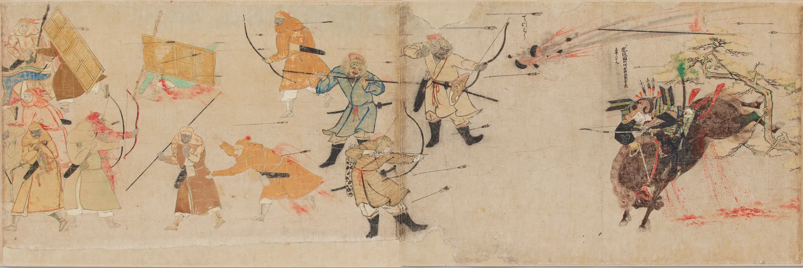
A different campaign in the same year: Yuan forces attack Japan in 1274, as the samurai Takezaki Suenaga had it painted about 1293. Mōko Shūrai Ekotoba. Museum of the Imperial Collections, Tokyo. Public domain, Commons. Some scholars think the three archers were painted in later.
A mixed army
About 200,000 men, mostly Chinese, under Mongol command.
1275
Bayan routed Jia Sidao's fleet and massacred Changzhou, which resisted.
1276
The Song empress dowager surrendered Hangzhou to spare its people.
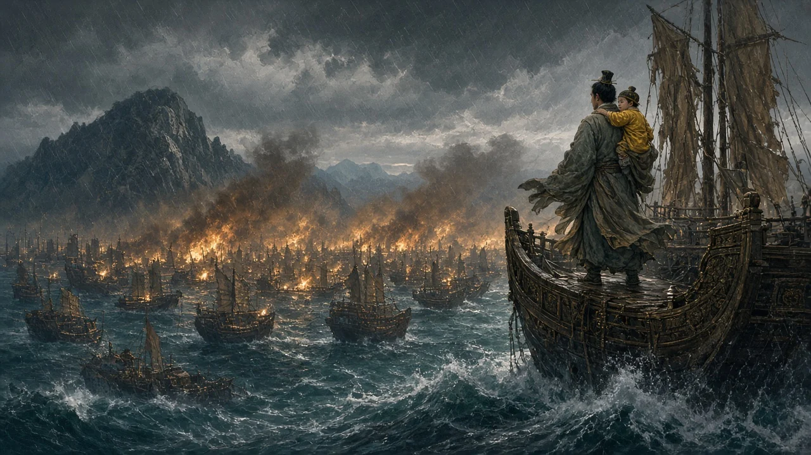
Q4 story · Yashan · 1279
The Song Dynasty Died at Sea off Yashan in 1279
Loyalists chained about 1,000 Song ships into one floating fortress.
A northern Chinese general led the Yuan fleet and cut off their water.
Minister Lu Xiufu leapt into the sea carrying the boy emperor.
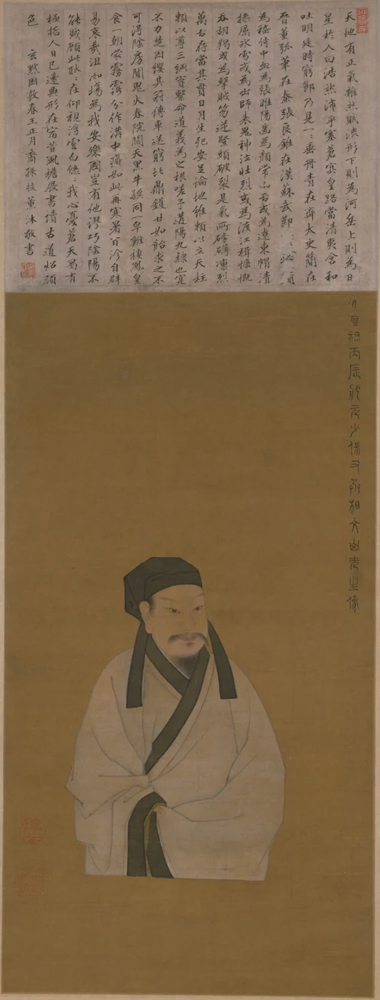
Wen Tianxiang, Ming portrait. Palace Museum, Beijing. Public domain, Commons.
Since ancient times, who has lived and not died? Let me leave a loyal heart to shine in the pages of history.Wen Tianxiang, a Song minister captured in 1278, in a poem written as a prisoner on a Yuan ship. He was executed in 1283.
AI-generated interpretation, not a historical source. The Song fleet burns off Yashan, 1279.
Your Turn · Review Question 4
Review Question 4
Naval Warfare and the Siege of Xiangyang
What role did technological innovations, multiethnic forces, and naval supremacy play in the Mongol defeat of the Southern Song Dynasty?
Answer from memory first, then check your reading for the passage that answers this question.
The river war (AI image)The trebuchets (AI image)The Yuan army, 1274
Coming next · Lecture 2
The Conquest Ended in 1279, but Ruling a Vast and Mixed Empire Had Only Begun
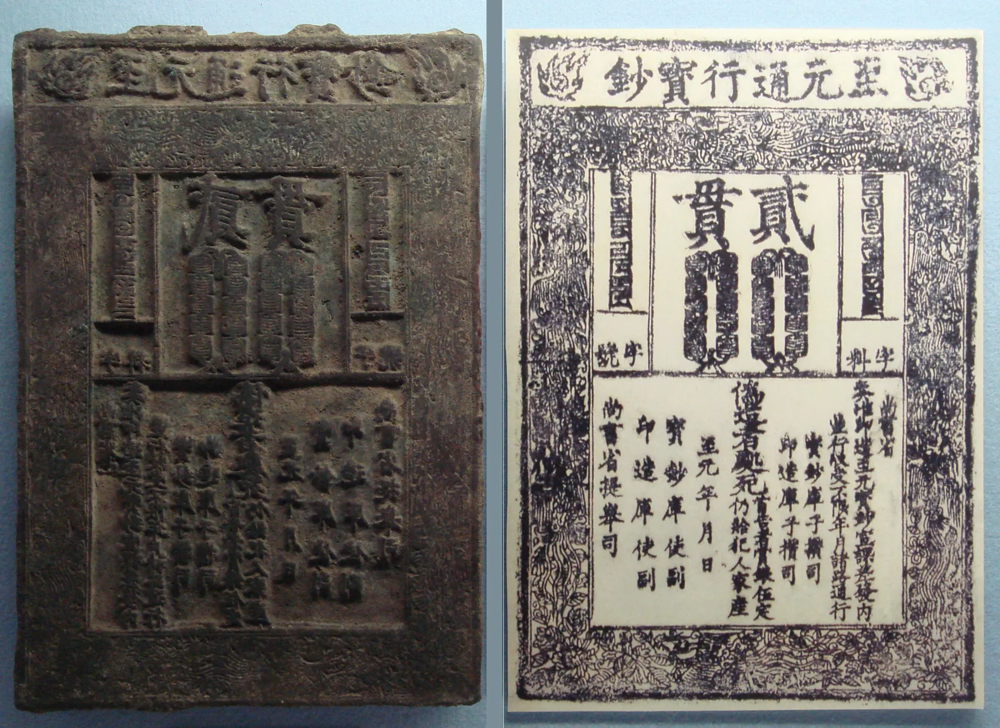
A Yuan banknote of the Zhiyuan series (1287) beside its printing plate. Tokyo Currency Museum. Photo: PHGCOM, CC BY-SA 3.0, Wikimedia Commons.
Who ranks where? The Yuan sorted its subjects by origin, Mongols at the top.
What moves where? Paper money, merchants, goods and ideas crossed Eurasia.
Carry this question forward: if Khubilai used Chinese traditions to win China, why did he still keep Mongols and foreigners above the Chinese?
Beyond the lecture · Independent Study
Pierian Spring
"A little learning is a dangerous thing; drink deep, or taste not the Pierian spring."Alexander Pope, An Essay on Criticism, 1711
The Secret History: how the Mongols told their own story.
Marco Polo: what a Venetian really saw at Khubilai's court.
Japan, 1274 and 1281: the invasions that failed.
Phags-pa: one alphabet for a whole empire.
Liu Guandao, Khubilai Khan Hunting, 1280. National Palace Museum, Taipei. Public domain.
Pierian Spring · The Mongols' own story
The Secret History of the Mongols Is the Only Account of Chinggis Written by Mongols
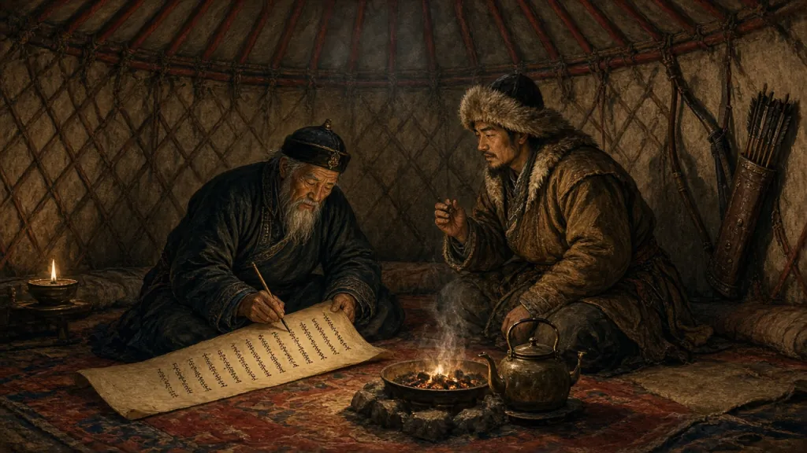
AI-generated interpretation, not a historical source. A scribe writes down a Mongol story told from memory.
Written down in the 1200s, probably within a generation of Chinggis's death.
Survived only as Chinese characters spelling out the Mongolian sounds.
Honest about flaws. It even tells how young Temüjin killed his half-brother.
Still a family story. It praises Chinggis's line and its heroes.
Pierian Spring · A traveler's tale
Marco Polo Made Khubilai Famous in Europe, but His Book Mixes Real Detail with Boasting
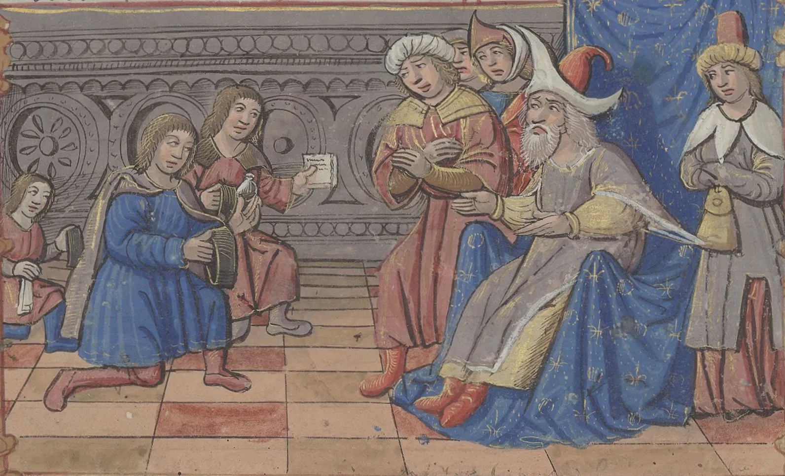
The Polos before Khubilai, as a French painter imagined it about 1500. Bibliothèque de l'Arsenal, Paris, MS 5219. Public domain, Wikimedia Commons.
c. 1275–1292. Polo says he served Khubilai for seventeen years.
Accurate details. Paper money, the relay roads and Hangzhou's size check out.
Strange gaps. No tea, no foot binding, and no Chinese record of him.
The verdict. Most historians think he went, but exaggerated his role.
Pierian Spring · The limits of conquest · 1274 and 1281
Khubilai Twice Sent Fleets Against Japan, and Both Invasions Failed
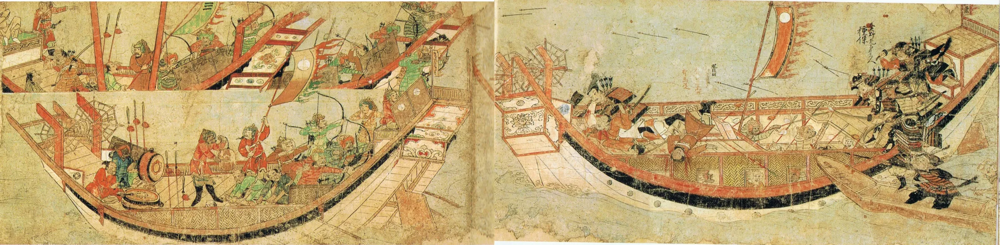
Samurai board a Yuan ship in 1281. Mōko Shūrai Ekotoba, painted for Takezaki Suenaga about 1293. Museum of the Imperial Collections, Tokyo. Public domain, Wikimedia Commons.
1274
A Mongol, Chinese and Korean force landed in Kyushu, then withdrew.
1281
A much larger fleet, many ships from the former Song, was wrecked by a typhoon.
Kamikaze
Japanese later called the storms the "divine wind."
Pierian Spring · An alphabet for an empire · 1269
Khubilai Ordered One New Alphabet to Write Every Language of His Empire
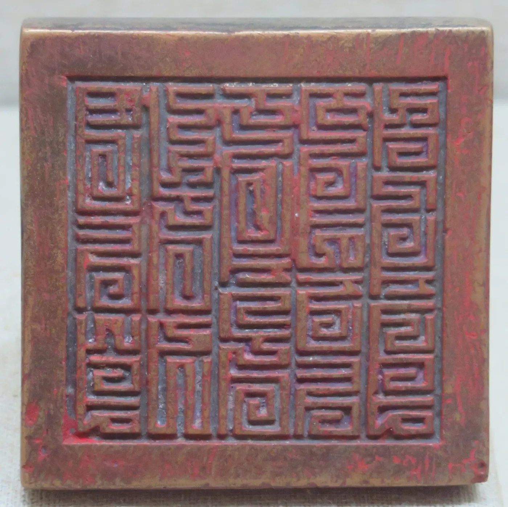
A Yuan official seal carved in Phags-pa script, found in Inner Mongolia in 1964. Photo: BabelStone, CC BY-SA 3.0, Wikimedia Commons.
The designer. The Tibetan lama Phags-pa, Khubilai's imperial preceptor.
The model. Letters based on Tibetan, written top to bottom like Mongolian.
The goal. One script for Mongolian, Chinese and other languages.
The result. Used on seals, coins and passes, then faded after 1368.
Sources and image credits
The Stories in This Deck Rest on These Sources
Your textbook
Patricia Buckley Ebrey, A History of China, Chapter 12, "China Under Mongol Rule (1215–1368)."
Primary sources (quoted)
Yuan shi (History of the Yuan), compiled 1369–1370 under Song Lian: biographies of Yelü Chucai (ch. 146), Yao Shu (ch. 158), Bayan (ch. 127) the engineer Ismail (ch. 203) and Liu Zheng (ch. 161); annals of Khubilai, edict of 1271 (ch. 7). Translations made for this deck from the Chinese text on Wikisource.
Yuan Haowen, "Crossing North on the Third Day of the Fifth Month, 1233," poem 3. Translated for this deck.
Wen Tianxiang, "Crossing the Lingding Sea," 1279.
Marco Polo, The Book of Ser Marco Polo, tr. Henry Yule, rev. Henri Cordier (Project Gutenberg).
The Secret History of the Mongols, tr. Igor de Rachewiltz (Brill, 2004).
Further reading beyond Ebrey
Herbert Franke and Denis Twitchett, eds., The Cambridge History of China, vol. 6 (1994): Thomas Allsen, ch. 4; Morris Rossabi, ch. 5; Frederick Mote, ch. 9.
Morris Rossabi, Khubilai Khan: His Life and Times (University of California Press, 1988).
David Morgan, The Mongols, 2nd ed. (Blackwell, 2007).
Tonio Andrade, The Gunpowder Age (Princeton University Press, 2016).
The full scholarly bibliography is in the background essay.
Images
Real images: National Palace Museum, Taipei; Bibliothèque nationale de France; Bibliothèque de l'Arsenal; The Metropolitan Museum of Art; Edinburgh University Library; Palace Museum, Beijing; Shanghai Museum; Museum of the Imperial Collections, Tokyo; photos by SY, Flaumfeder, PHGCOM, Gary Lee Todd and BabelStone. Full credits sit in each caption.
Images marked AI-generated were made for this deck. They are interpretations, not historical sources.